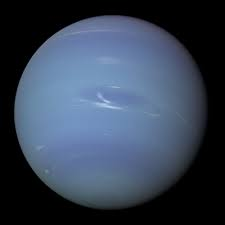
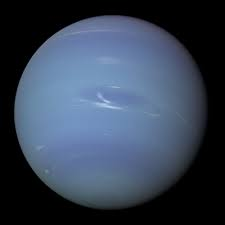

| Earth |
| Mass (kg): |
5.98 x 10^24 |
| Diameter (km): |
12756 |
| Mean Density (kg/m^3): |
5520 |
| Escape Velocity (m/s): |
11200 |
| Average Distance from Sun: |
1 AU (149,597,890 km) |
| Rotation Period (length of day in Earth days) |
1 (23.93 hours) |
| Revolution Period (length of year in Earth days) |
365.26 |
| Saturn |
| Mass (kg): |
5.69 x 10^26 |
| Diameter (km): |
120660 |
| Mean Density (kg/m^3): |
690 |
| Escape Velocity (m/s): |
35600 |
| Average Distance from Sun: |
9.537 AU (1,426,725,400 km) |
| Rotation Period (length of day in Earth days) |
0.44 (10.2 Earth hours) |
| Revolution Period (length of year in Earth days) |
29.46 |
| Uranus |
| Mass (kg): |
8.68 x 10^25 |
| Diameter (km): |
51118 |
| Mean Density (kg/m^3): |
1290 |
| Escape Velocity (m/s): |
21300 |
| Average Distance from Sun: |
19.19 AU (2,870,972,200 km) |
| Rotation Period (length of day in Earth days) |
0.72 (17.9 Earth hours)(retrogade) |
| Revolution Period (length of year in Earth days) |
30,685 (84 Earth years) |
| Neptune |
| Mass (kg): |
1.02 x 10^26 |
| Diameter (km): |
49528 |
| Mean Density (kg/m^3): |
1640 |
| Escape Velocity (m/s): |
23300 |
| Average Distance from Sun: |
30.06 AU (4,498,252,900 km) |
| Rotation Period (length of day in Earth days) |
0.67 (16.1 hours) |
| Revolution Period (length of year in Earth days) |
60,190 (164.8 Earth years) |


 
